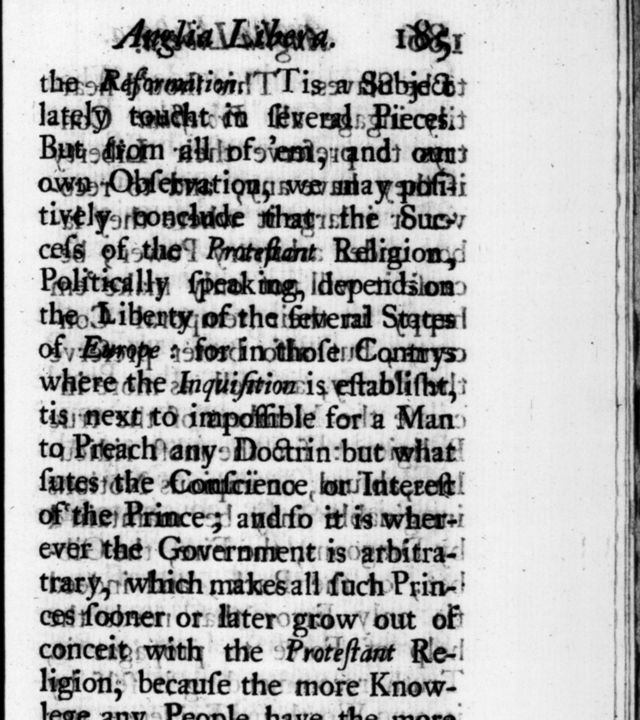

Protestantism and the liberty of states (p. 185)
English: London 1701, p. 185, scan n190. Toland’s spelling (“Doctrin”, “sutes”, “Knowlege”, “propagat”) as printed; long s modernised. Highlighted: Lecky’s quotation.

… ’Tis a Subject lately toucht in several Pieces. But from all of ’em, and our own Observation, we may positively conclude that the Success of the Protestant Religion, Politically speaking, depends on the Liberty of the several States of Europe: for in those Contrys where the Inquisition is establisht, ’tis next to impossible for a Man to Preach any Doctrin but what sutes the Conscience, or Interest of the Prince; and so it is wherever the Government is arbitrary, which makes all such Princes sooner or later grow out of conceit with the Protestant Religion, because the more Knowlege any People have the more they value Liberty, which makes ’em of Course the less dispos’d to [p. 186] be Slaves. …
Lecky (vol. II, ch. V, note 104) quotes the highlighted words accurately, apart from modern capitals and spelling. His date “1702” is a year late for this printing, whose title page we have not viewed (1701 is the date in the catalogue).
Further down the rabbit hole
Sources that Lecky cites in the notes next to the ones that cite this page.
- Locke, Two Treatises of GovernmentNo taxation without consent, and the pulpit’s favourite absolutist
- Bianchi, Traité de la puissance ecclésiastiqueAn Ultramontane friar on when a people may depose its king, and the Scot who ‘sold his pen’ to James I
- Macaulay, History of England and EssaysMacaulay on Puritans, bear-baiting and the servile Church
- Michelet, Louis XIV et la révocation de l’Édit de NantesJurieu stands alone against Bossuet; the gentle Saurin works for Louis XIV
- Allen, Inquiry into the Rise and Growth of the Royal PrerogativeAn oath of non-resistance that outlived the Revolution by some thirty years
- An Homily against Disobedience and Wilful RebellionHell as the prison of rebels: the Church of England preaches obedience


Backlinks
Every place in Rationalism in Europe that links to this page (generated automatically when the site is built).
- Chapter V: note 104